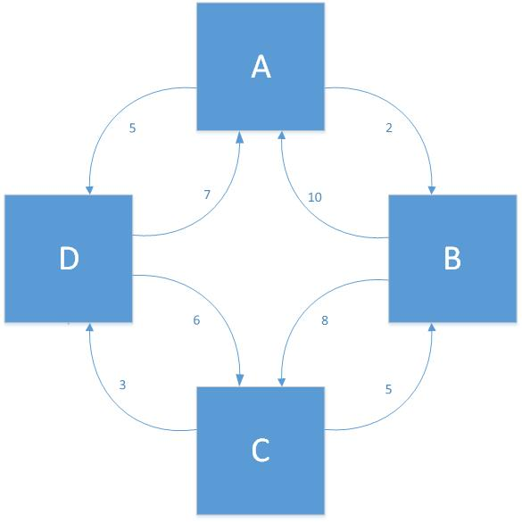

How are Markov Rankings calculated?
The Short Answer:
Instead of basing the rankings off of sportswriters' opinions, or win-loss records, Markov chains are used to take into account the score of every single game and the strength of each team's schedule (in a 100% objective way!).
The Long Answer:
As you might have guessed, to fully understand this ranking method, we'll have to learn a bit about Markov chains.
Definition: A Markov Chain is a stochastic (randomly generated) model describing a sequence of possible events in which the probability of each event depends only on the state attained in the previous event.
A simple example of a Markov chain is the spread of disease. So pretend we have 9 people in hospital beds, and one has an infectious disease. Furthermore, suppose that the probability of the sick patient infecting a neighboring patient is 50%. This is a Markov Chain, since all we need to know in order to predict the future is whether or not each patient is currently sick. It doesn't matter what happened in the past.
Now, let's talk about random walks.
Definition: A random walk is a stochastic process that describes a path that consists of a succession of random steps on some mathematical space.
So in our previous example, a random walk would be our simulation traveling through time, with each step being a different state. We'd have 29 states that we could be going through (Since each of the 9 patients have 2 states: sick and healthy).
So how does this all relate to sports?
Let's start looking at some graphs. Imagine we have some Sportsball league consisting of 4 teams: A, B, C, and D. Each team has their own fan base, but after each game, there is a chance that fans of one team will switch to another based on the outcome. In our league, each team only plays two of the other teams. We can model this with the following graph:
Each arrow in the graph represents the number of points each team allowed the other to score. So, for example, when Team B played Team C, the score was 5-8, with C the winner.
So now we'll run our own random walk on this graph. Let's look at Bobby Sportsman, a huge Sportsball fan that watches every game every week. He's a respectable guy, so he gives credit to teams when they play well, even if they beat his favorite team. As a result, his favorite team doesn't stay the same from week to week. So, we have 4 states:
- Bobby is a fan of Team A.
- Bobby is a fan of Team B.
- Bobby is a fan of Team C.
- Bobby is a fan of Team D.
Now let's try to start predicting Bobby's behavior. Since he's human, we won't be able to predict his behavior with any certainty, but we can talk in terms of probability! The goal here is to come up with a matrix of probabilities, $A$, in which each element $a_{ij}$ holds the probability of moving from state $i$ to state $j$. For example, the element $a_{12}$ (first row, second column) will be the probability that Bobby changes from being a fan of Team A to a fan of Team B. Now, how should we generate these probabilities? Let's base it on the scores of course! If we convert our graph above into a matrix, we obtain the following: $$ \begin{bmatrix} 0 & 2 & 0 & 5 \\ 10 & 0 & 8 & 0 \\ 0 & 5 & 0 & 3 \\ 7 & 0 & 6 & 0 \\ \end{bmatrix} $$ Now, of course, we'll need to play around with these to get probabilities between 0 and 1. Further, we must make sure each row sums to 1, as Bobby has to be a fan of some team at all times. To satisfy these two conditions, and preserve the meaning of the scores, we:
- Divide each element by the total points socred by all teams in the league during the season.
- Adjust the diagonal elements to force each row to sum to 1.
The diagonal elements, $a_{ii}$, represent the probability that Bobby will stay a fan of Team $i$. A larger diagonal element would mean that Team $i$ did not give up many points. The stronger the team's defense, the more likely they are to retain Bobby as a fan.
After we have done these two steps, we are left with the following matrix: $$ A = \begin{bmatrix} 0.8478 & 0.0435 & 0 & 0.1087 \\ 0.2174 & 0.6087 & 0.1739 & 0 \\ 0 & 0.1087 & 0.8261 & 0.0652 \\ 0.1522 & 0 & 0.1304 & 0.7174 \\ \end{bmatrix} $$ Now, let's consider $A^2$. After some inspection, we see that the $ij$th element of this matrix is the probability of ending at state $j$ after two steps if we start at state $i$. So if Bobby is currently a fan of Team A, the element in the first row and third column of $A^2$ Would be the probability that Bobby is a fan of Team C after changing his mind twice (Note: here I say "changing his mind, but this includes the possibility that Bobby stays a fan of Team A on the first step).
If we look at $A^3$, we find the probabilities that result after 3 steps, $A^4$ contains the probabilities after 4 steps, and so on. As it turns out, if we raise $A$ to a really high power, all of the rows start to look the same. In other words, $\lim_\limits{n \to \infty}{A^n}$ converges and each row of the resulting matrix is identical. This matrix, $A^\infty$, holds the long-run probability of the system being in each state. In other words, in the long run, it tells us how much time Bobby spends being a fan of each team.
Let's continue with our Sportsball league example. The limit $\lim_\limits{n \to \infty}{A^n}$ quickly converges to give us: $$ A^\infty = \begin{bmatrix} 0.3856 & 0.1208 & 0.2806 & 0.2131 \\ 0.3856 & 0.1208 & 0.2806 & 0.2131 \\ 0.3856 & 0.1208 & 0.2806 & 0.2131 \\ 0.3856 & 0.1208 & 0.2806 & 0.2131 \\ \end{bmatrix} $$ So, in fact, it doesn't matter which team Bobby starts out a fan of. After changing his mind $\infty$ times, the probability that Bobby is a fan of Team A is 0.3856. The probability he is a fan of Team B is 0.1208, and so on. Thus, we have generated a ranking for the teams:
- Team A (Rating: 0.3856)
- Team C (Rating: 0.2806)
- Team D (Rating: 0.2131)
- Team B (Rating: 0.1208)
Ok, so I see how the scores of each game clearly affect the rankings, but what does this have to do with strength of schedule?
Basically, this model will tell us who is the most popular team, if every sportsball fan is like Bobby. When Bobby is a fan of one team, he looks at all the other teams that his team has played, and based on how many points opposing teams have scored on his favorite team, he might just convert to the opposing teams fanbase! What this means, is if a team plays the most popular team in the league, they have an opportunity to win over a lot of fans. Whereas if they play an unpopular team, since the unpopular team has few fans to begin with, there is little to gain.
Ready to start looking at some real-world examples?
Let's look at a larger sample, where our results will be more meaningful. (Download the MATLAB code here) We'll consider the ACC Football division 2016 season. The ACC consists of 14 teams, and we'll only consider intra-conference games for this example. We enter the scores into a matrix and normalize them into probabilities, just as in the above example. When we are finished, we obtain the rankings:
These rankings are as expected. They more or less follow the W-L records. The only ranks that need closer inspection are the ranks of Boston College and NC State. To explain this, observe that Boston College was shut out by Virginia Tech 49-0, which translates to Boston College lacking an incoming edge from Virginia Tech in the graph. In other words, no VT fan will ever become a Boston College fan (at least not before becoming a fan of another team first). Furthermore, Boston College scored the least points throughout the season, with just 96. Duke and UVA scored 165 and 167, respectively.
As for NC State, they played 3 of the top 4 teams, while Georgia Tech only played 2, Georgia Tech also had close games with both Duke and Boston College, the bottom two teams in the league.
So we see in this first example that using Markov Chains can have a sizeable effect on rankings, by taking into account strength of schedule and the actual scores of each game.
What about inter-division play?
This is where things get really fun.
Let's take a look at what happens when we apply our Markov Chain ranking algorithm to all NCAA Division I Men's Basketball teams. This includes 351 teams, who mostly only play teams within their own conference. There are 32 separate conferences. (Download the MATLAB file here and the data here)
The figure below visually shows how sparse the matrix of scores looks for this problem:
Given the sparsity of this matrix, you might think that we do not have enough data to calculate reliable rankings. However, the rankings we obtain end up being quite reasonable. Of the top 25 we calculate, 24 of the teams appear in the AP Poll Top 25. The AP Poll Top 25 is generated by polling 65 sportswriters and broadcasters. Thus it is quite subjective. Our rankings are completely objective, and still take into account the most important factors that sportswriters and broadcasters take into account when creating their own top 25.
To the right of our rankings, I've printed the W-L record and Points Scored-Points Allowed record for each team as a reference.
(Note: Our rankings do not include non-D1 games. The AP poll does, which is why UNC has one more win in their rankings. Our rankings and the AP Poll are both based off of the same period.)
The biggest weakness in these Markov-Chain-generated rankings is that unless there is a sufficient amount of data, the rankings are just about meaningless. After 3 or 4 weeks of season play, however, it is quite a robust ranking system. To demostrate this, I tested the sensitivity of these post-season rankings. If we make the number 1 team, West Virginia, lose to the worst team in all of D-1, Alabama A&M, we can see what happens to the rankings. If Alabama A&M wins 100-0, West Virginia becomes ranked 14th, with the other rankings staying almost identical. Alabama A&M also moves up about 15 spots. While this is fairly drastic, so was the score we input. Even if West Virginia wins, this alone is not enough to keep the first place spot. As it turns out, West Virginia must score about 2 points for every point Alabama A&M scores in this hypothetical game in order to stay in first place. This makes sense; we would expect the very top team to blowout the very bottom team. Anything less would suggest that West Virginia is not as good as we thought.